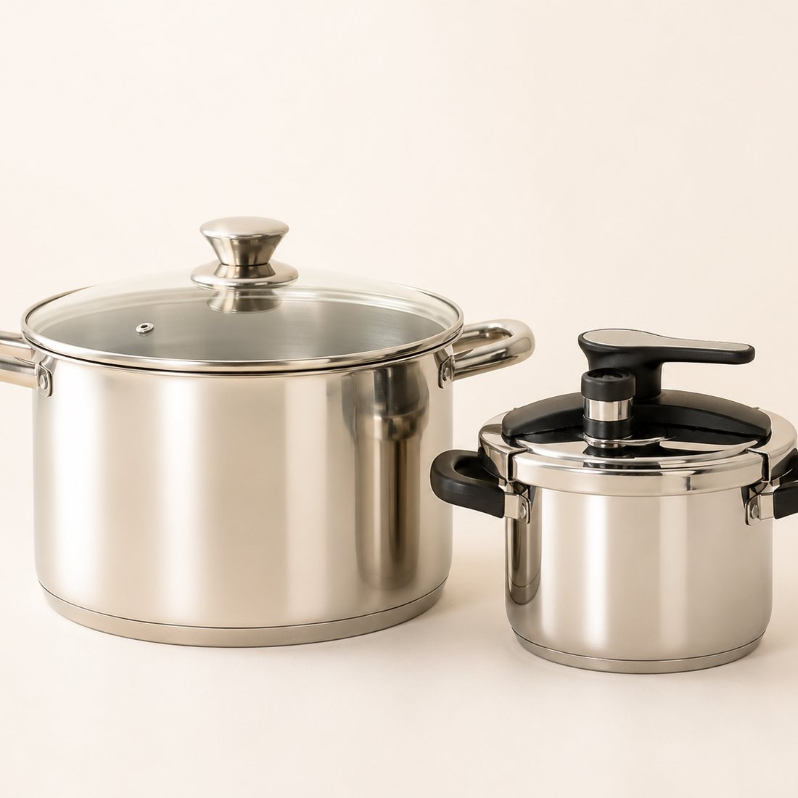
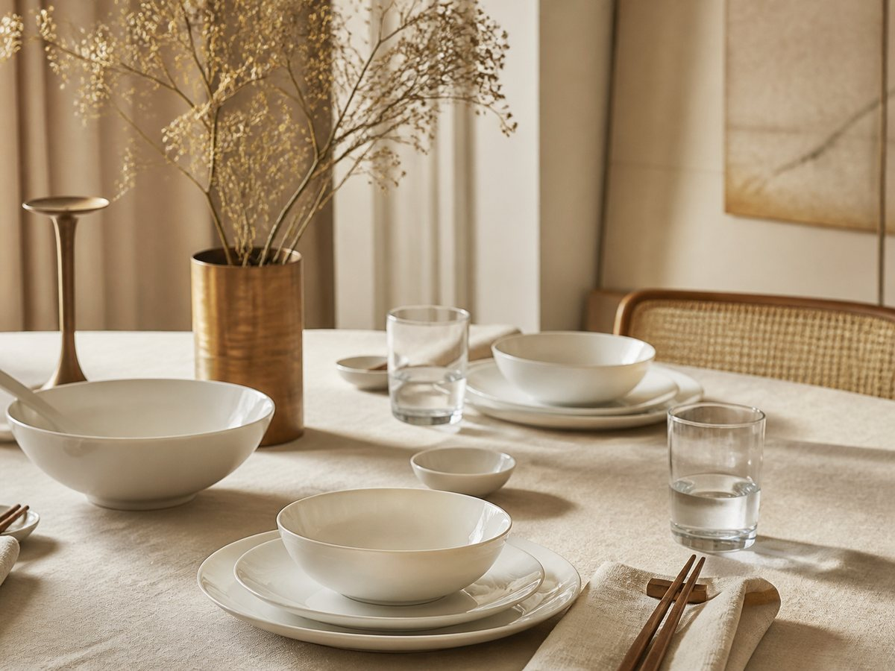
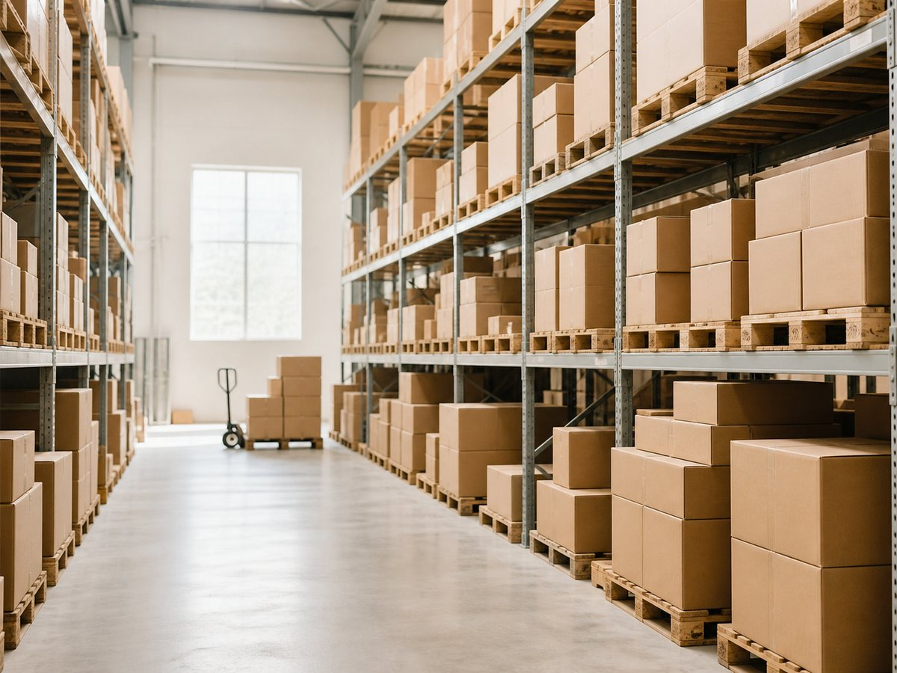
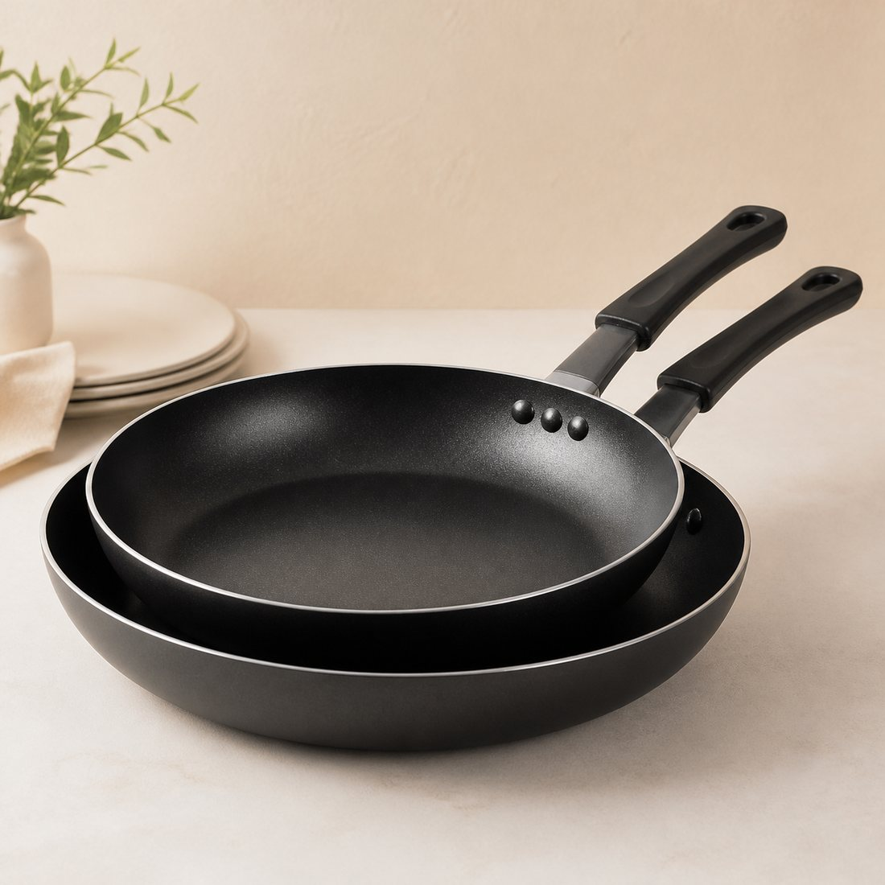
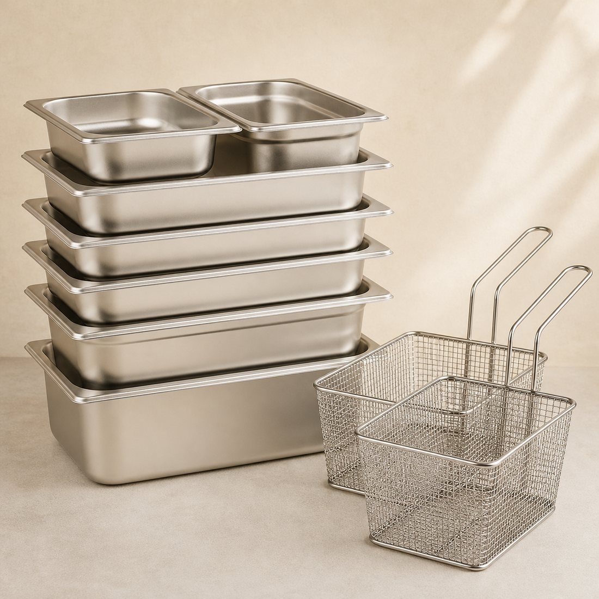
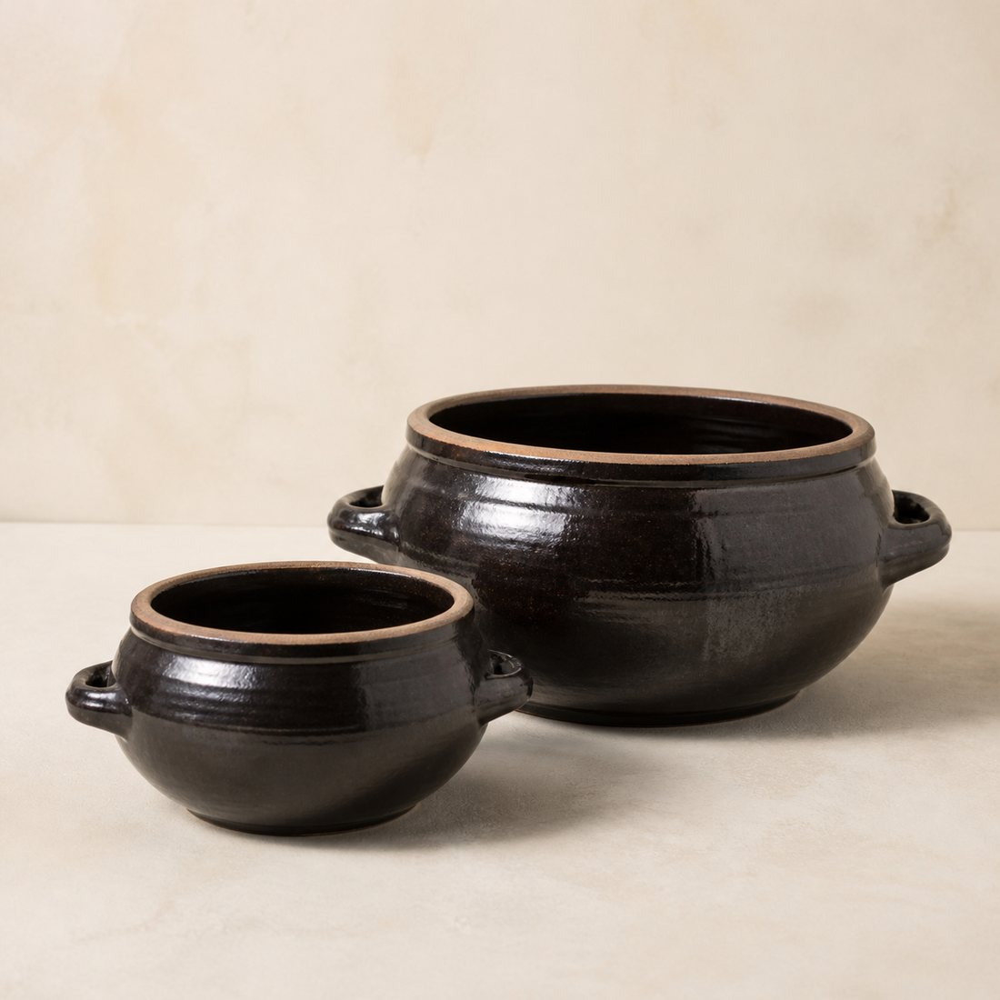

01
조리기물
업소용 대형 볶음솥·전판과 코팅팬·웍부터 가정용 냄비·프라이팬, 뚝배기까지. 가스와 인덕션 모두 쓸 수 있는 제품을 규격별로 맞춰 갖춥니다.
SINCE 2001 · BUSAN, KOREA
(주)그랑쉐프는 냄비와 프라이팬, 식탁 위의 그릇부터 조리도구까지 주방에 필요한 것을 만들고 공급하는 기업입니다. 2001년 부산에서 시작해, 오늘도 같은 자리에서 좋은 물건을 고르고 보내는 일을 합니다.
PROFESSIONAL COOK SINCE 2001
대표 품목 — 냄비·솥 · 프라이팬


공식 로고 · 주방용품 전문 브랜드
ABOUT US
그랑쉐프는 2001년 부산에서 문을 열었습니다. 이후 지금까지 부산 강서구 대저1동에 본사와 사무실을 두고 주방용품과 생활용품을 기획하고, 직접 만들고, 유통해 왔습니다.
한 제품을 고를 때 보는 것은 결국 두 가지입니다. 오래 써도 불편하지 않을 것, 그리고 필요한 곳에 제때 닿을 것. 냄비 하나를 고르는 일에도 같은 기준을 적용합니다.
주방용품 전문가 그랑쉐프는 가장 좋은 제품을 합리적인 가격에 공급하는 부울경 대표 주방·생활용품 유통·제조 기업입니다. 그랜드쿡(GRAND COOK) 브랜드와 그랑쉐프몰·종합주방몰 채널을 함께 두고, 조리기물부터 식탁·생활용품까지 한자리에서 만납니다.
BUSINESS AREAS
냄비·프라이팬 같은 조리기물부터 식탁 위의 그릇, 작은 조리도구까지 한자리에서 다룹니다. 자체 기획 상품과 국내 주방 브랜드 제품을 함께 취급하고, 생활용품·일반유통까지 폭을 넓혀 왔습니다.
업소용 대형 볶음솥·전판과 코팅팬·웍부터 가정용 냄비·프라이팬, 뚝배기까지. 가스와 인덕션 모두 쓸 수 있는 제품을 규격별로 맞춰 갖춥니다.

머그와 컵, 공기·접시, 잔과 수저류까지. 매일 쓰는 그릇을 세트와 단품으로 나누어 필요한 만큼 공급합니다.

채칼·식도·가위 같은 조리도구와 유리 밀폐용기, 물병, 수저통 등 주방의 잔손질을 줄여주는 물건을 다룹니다.

대형마트와 지역 유통센터, 도소매 채널에 제품을 공급합니다. 식당·급식소에 필요한 대용량 주방기물과 식자재 부자재·소모품까지 함께 보내고, 행사 기획과 발주 단위 조정까지 상담으로 맞춥니다. 부산·울산·경남은 직배송으로 보내고, 정기 납품도 함께 진행합니다.
CLIENTS & SUPPLY
부울경 유통망과 기업·공공 채널에 주방·생활용품을 공급합니다. 매장 상품 구성부터 행사·판촉, 기관 단위 특판까지 상담으로 맞춥니다.
대기업 사내 복지·비품 채널과 관공서 특판 납품을 함께 진행합니다. 정기 납품, 행사·판촉 물량, 기관 단위 발주까지 상담으로 맞춥니다.
※ 거래처 표기는 납품 채널 기준이며, 거래 조건·단가는 별도 협의 사항입니다.
FOR BUSINESS
같은 기물이라도 쓰는 곳에 따라 갖춰야 할 구성이 다릅니다. 상담이 많은 세 가지 경우를 예로 정리했습니다. 품목과 수량은 매장 규모·예산·납기에 맞춰 다시 짭니다.
개업 준비 · 주방 기물 일괄
급식실 노후 기물 교체 · 정기 보충
명절·창립기념 · 단체 선물
발주·배송·정산·교환처럼 실제로 가장 많이 묻는 내용입니다.
한 품목만 발주하는 단일 발주와 여러 품목을 묶는 혼합 발주 모두 상담으로 진행합니다. 최소 수량과 박스 단위는 품목·제조사에 따라 다르므로, 희망 품목과 수량을 알려주시면 가능한 단위로 다시 맞춰 안내드립니다.
부울경(부산·울산·경남)은 직접 배송으로 보내고, 주 단위·월 단위 정기 납품도 함께 진행합니다. 그 밖의 지역은 품목과 물량에 따라 배송 방법을 협의해 안내드립니다.
사업자 거래는 세금계산서 발행 기준으로 진행하며, 법인카드 결제도 상담으로 맞춥니다. 관공서·기업은 기관이 요구하는 정산 서류와 절차를 확인해 진행합니다. 결제 조건은 거래 형태와 품목에 따라 별도로 정합니다.
수령 후 제품 상태를 확인하시고, 파손·불량이 있으면 사진과 함께 대표전화나 이메일로 알려주세요. 확인 후 교환·보완 절차를 안내드립니다. 운송 중 파손은 배송 상태를 함께 확인합니다.
기재한 29개 브랜드 외에도 수십여 개 협력 제조·유통사와 거래하고 있습니다. 찾는 브랜드·규격·모델명을 알려주시면 취급 가능 여부와 납기를 확인해 안내드립니다.
상담 시 요청하시면 품목에 따라 샘플·카탈로그·사진 자료를 보내드립니다. 방문 상담을 원하시면 미리 연락 주시면 담당자가 준비해 두겠습니다.
※ 위 내용은 일반적인 안내입니다. 수량·기간·금액 등 구체적인 조건은 품목과 거래 형태에 따라 달라지므로 상담으로 확정합니다.
PRODUCT CATEGORIES
식당·급식소에서 쓰는 대형 볶음솥과 전판, 업소용 밧드·튀김 바스켓부터 집에서 쓰는 주방용품까지 한자리에서 갖춥니다. 품목별 예시 이미지이며, 실제 취급 모델과 규격은 문의로 확인해 주세요.
업소 · 급식용 식당·급식소에서 쓰는 대형 기물과 조리용품




가정 · 일반용 매일 쓰는 주방용품


식당·급식이 쓰는 대용량까지 함께 보냅니다.
대형 볶음솥(36~60cm)과 전판, 업소용 코팅팬·웍, 스테인리스·PC 밧드와 튀김 바스켓, 뚝배기까지 — 장사하는 주방의 기물과 조리용품, 식자재 부자재·소모품을 한 창구에서 공급합니다. 규격과 수량을 알려주시면 납기와 발주 단위까지 맞춰 드립니다.
※ 품목 구성은 거래처와 시즌에 따라 달라집니다. 취급 여부는 문의로 확인해 주세요.
BRAND PARTNERS
냄비·프라이팬부터 주방가전, 식기·생활용품까지 — 국내 주방 브랜드 29곳의 제품을 함께 취급합니다. 브랜드를 선택하면 업체 소개와 대표 취급 제품, 공식 사이트 링크가 표시됩니다.
브랜드를 선택하면 업체 소개와 공식 사이트 링크가 표시됩니다.
+ 외 수십여 개 협력 브랜드 기재한 주요 브랜드 외에도 수십여 개 국내·외 전문 제조·협력사 제품을 함께 유통·공급합니다. 목록에 없는 품목도 상담으로 확인해 드립니다.
※ 대표 제품은 각 브랜드 공식 홈페이지에 게시된 품목 기준으로 정리했습니다. 실제 취급 여부·규격·발주 단위는 시즌과 거래처에 따라 달라지므로 문의로 확인해 주세요. 공식 홈페이지가 없거나 확인되지 않는 업체는 '미운영·미확인'으로 표기했습니다.
QUALITY & DISTRIBUTION
숫자로 자랑하기보다, 매일 반복되는 기준으로 말합니다.
가스인지 인덕션인지, 어떤 열과 세제를 견뎌야 하는지부터 확인합니다. 눈에 잘 보이지 않는 바닥과 모서리까지 같은 기준입니다.
한 번 잘 만드는 것보다 같은 품질로 계속 보내는 것이 어렵습니다. 검수 기준을 정해 두고 같은 결과가 나오도록 관리합니다.
제조와 유통을 함께 하기 때문에 재고와 일정을 한자리에서 봅니다. 행사 일정이나 발주 단위가 바뀌어도 빠르게 답을 드립니다.
한 번 사서 오래 쓰는 물건을 지향합니다. 규격을 단순하게 유지해 매장에서도, 집에서도 고르기 쉽도록 만듭니다.
LOCATION
본사와 사무실이 함께 있습니다. 방문 전에 연락 주시면 담당자가 안내드립니다.
B2B INQUIRY
품목, 수량, 납기를 알려주시면 담당자가 확인 후 연락드립니다. 마트 행사·판촉은 물론 식당·급식소의 대용량 주문도 함께 상담합니다. 부울경은 직배송, 정기 납품도 가능합니다. 급한 문의는 전화가 가장 빠릅니다.